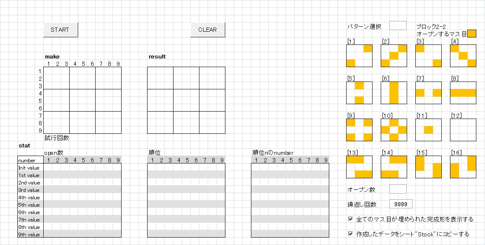
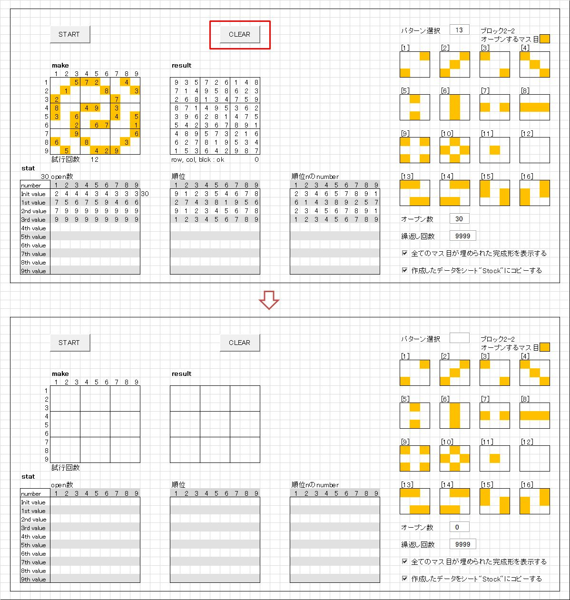

「数独問題作成ツール 別解法」取り扱い説明書
これまで公開してきた｢数独問題作成ツール｣ (以下、｢数独ツール｣と略記します)は、最初に9x9の全てのマス目を埋めた完成形を作成し、
ブランクにできるマス目を、増やせるだけ増やしていくという方法で問題を作成していました。
詳細は
suudoku_02_doc
をご一読下さい。[※1]
この方法では最初にオープンするナンバーのマス目の数(以下オープン数と略記)が23以上の問題を作ることができます。
しかし、オープンするマス目のパターンはランダムに選ばれるため、
自分が思い描いたパターンの問題を作ることはできませんでした。

[※1]
併せて｢数独数独問題作成ツール アップデート｣もご覧下さい。
リンク：
suudoku_03_doc
このツールを使用するにあたって
- このツールの無断転載を一切禁止します。
-
ロジックの改善、改良をお考えの場合は、ご連絡頂ければソースコードをお送り致します。
ロジックの改造でオープン数で22, 21に成功した場合、御一報頂けるとうれしいです。
併せて、そのロジックも教えて頂けることを期待します。
インストール
z.suudoku_04.zipを解凍します。
解凍すると [z.suudoku_04] フォルダーが現れます。
[z.suudoku_04] に、必要なデータ一式が格納されています。
適当な場所に、[z.suudoku_04]フォルダーを移動して下さい。
アンインストール
[z.suudoku_04] フォルダーを削除して下さい。
これで、削除完了です。
起動
[z.suudoku_04] フォルダー内の "z.suudoku_04" (拡張子が表示されている場合は "z.suudoku_04.xlsm" )をダブルクリックして下さい。
数独問題作成ツールが起動します。
別解法は、自由なパターンの問題を作成します
問題作成方法を順に説明します。
-
エクスプローラーから｢z.suudoku_04.xlsm｣を開きます。

-
パターンの作り方から問題作成までを説明します。
-
｢make｣と表示されている枠内でオープンするマス目をオレンジ色で埋めて行きます。
枠内の適当なセルをクリックすると、そのセルと対角のセルがオレンジ色に変わります。
-
思い描いたパターンを作って行きます。
消したい場合は、対角のセルをクリックするとオレンジ色が消えます。
-
作成したパターンの例を以下に示しました。

｢START｣ボタンを押すと問題作成が開始されます。
-
問題の作成の成功すると、以下のような画面になります。

オレンジ色のセルにオープンするナンバーが書き込まれていることが分かります。
画面右下のチェックボックスがチェックされている場合は、
完成形が表示され、シート｢Stock｣に作成された問題がコピーされます。 -
「CLEAR」ボタンを押すと、起動時の画面に戻ります。

-
オープンするマス目の数について
28～32くらいが面白いパターンが作れますし、実際に解くときも無理なく解くことができると思います。
私がデバッグ中に調べた限りでは、25以上で問題が作成できることを確認しています。